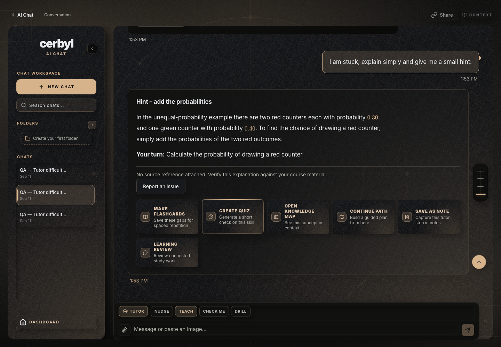
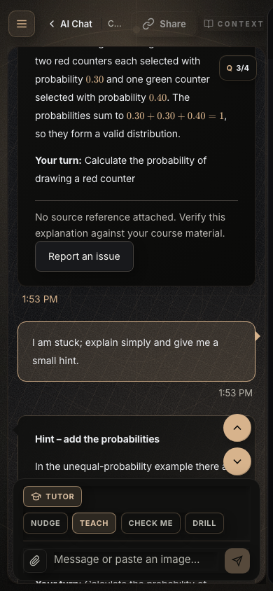
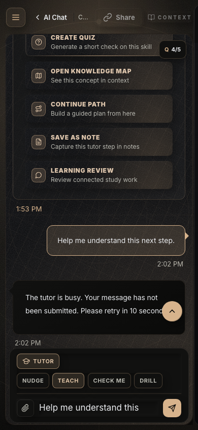

Tutor audit outputs
Final live quality verification is pending the AI test allowance. Read the full status and evidence.

Saved conversation on desktop — intermediate generated content
Saved conversation on mobile — intermediate generated content
Current retry interface — injected 503, draft preserved